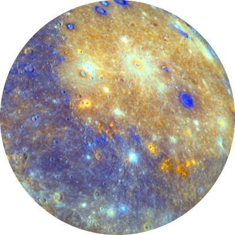
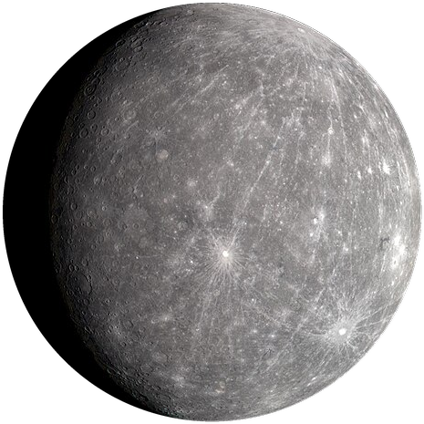
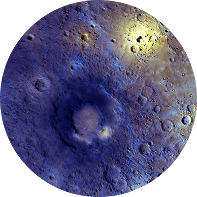

Mercury
Mercury is the smallest planet and the closest one to the Sun. Its surface is covered in craters, much like the Moon.



Facts about Mercury
- Diameter: about 4,879 km, the smallest planet
- Distance from the Sun: about 58 million km
- A year lasts only 88 Earth days
- It rotates once every 59 Earth days
- It has no moons
- Temperatures range from about 430 °C in the day to -180 °C at night